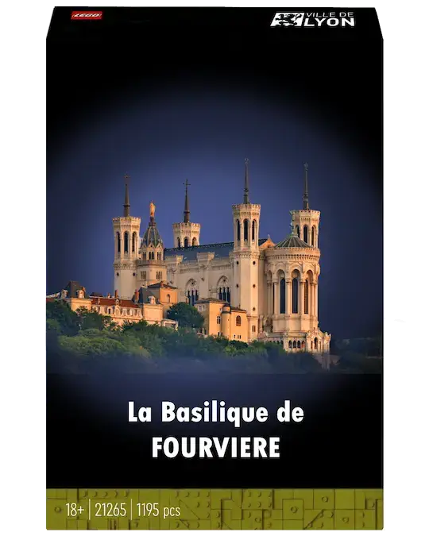
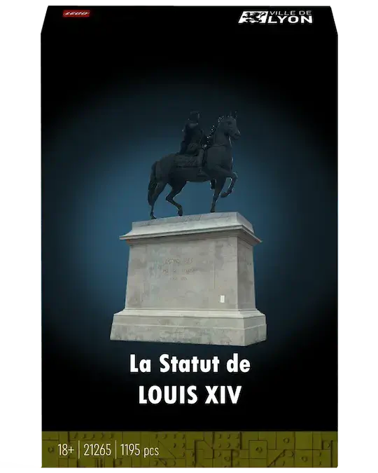
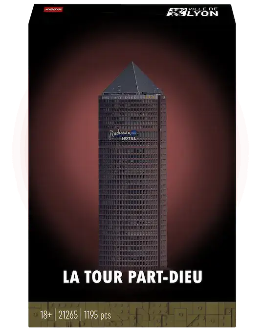
“Ramenez l’art à la
maison !”
Venez nous voir !Découvrez des œuvres inédites exclusives de Lyon enLEGO!
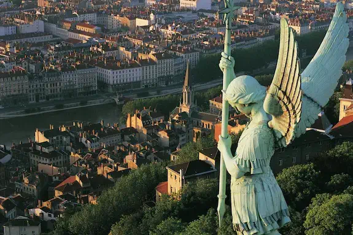
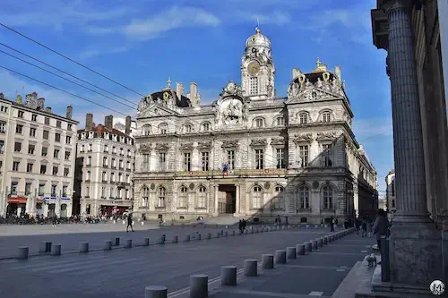
Basilique,...
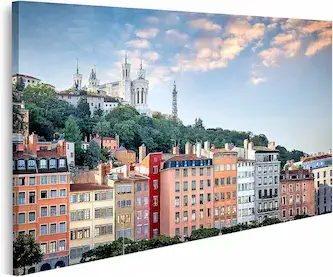
tours,...
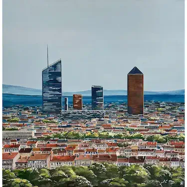
statues,...
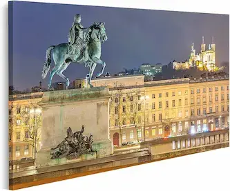
De quoi vivre la vibe
lyonnaise !
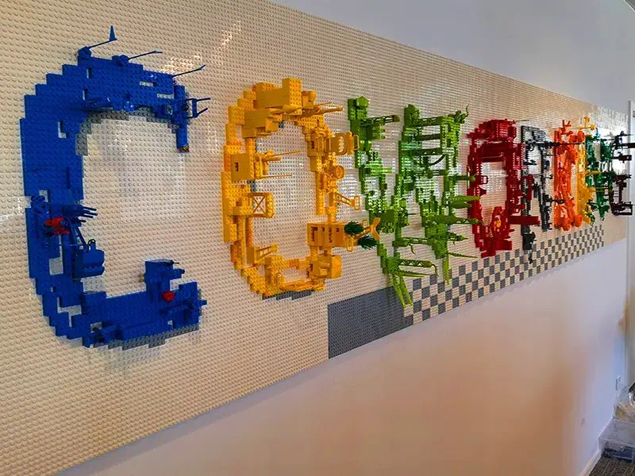
Contribuez à la fresque spécialeLEGO!
Repartez avec un morceau chez vous !
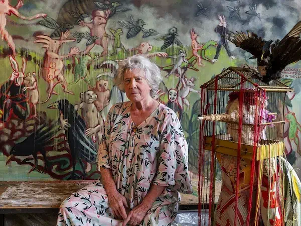
Un River of no return enLEGO!
de Sylvie Selig
Entrez dans la peau de Picasso !
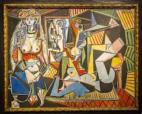
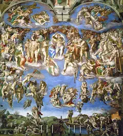
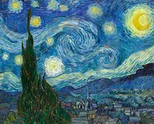
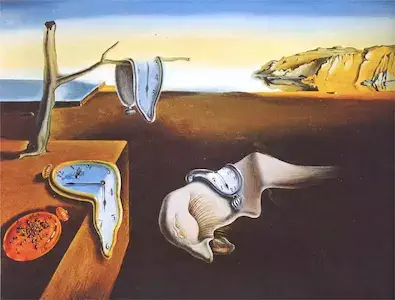
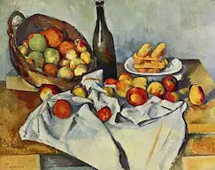
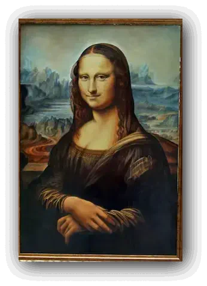
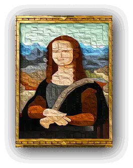
Dans un style donné, créez votre propre œuvre LEGO !
(Évidemment que vous pourrez
le ramener chez vous !)
Et tentez de gagner le concours de la meilleure œuvreLEGO!